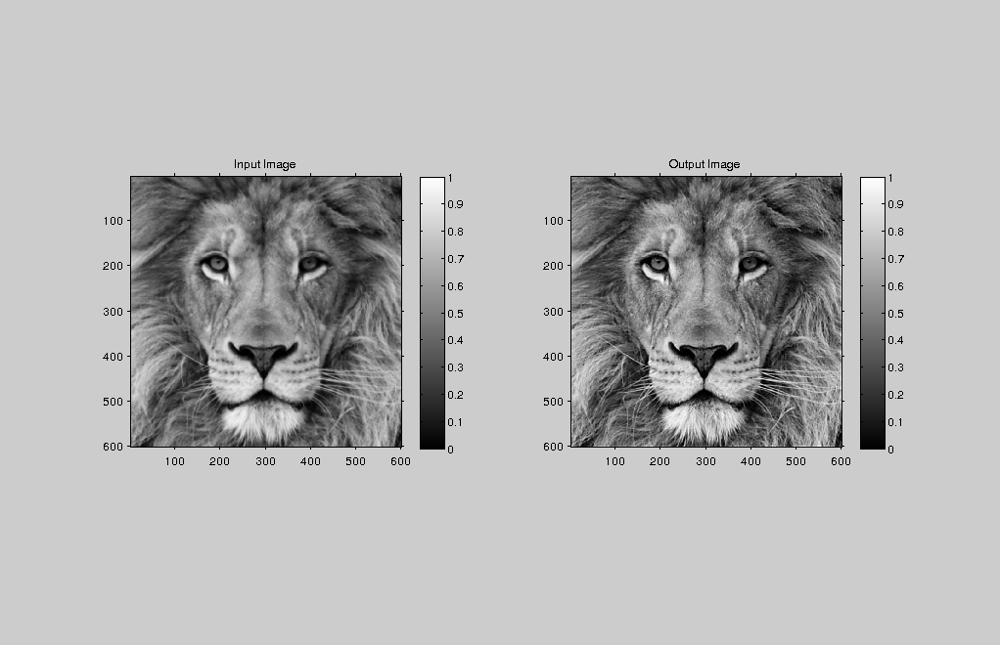
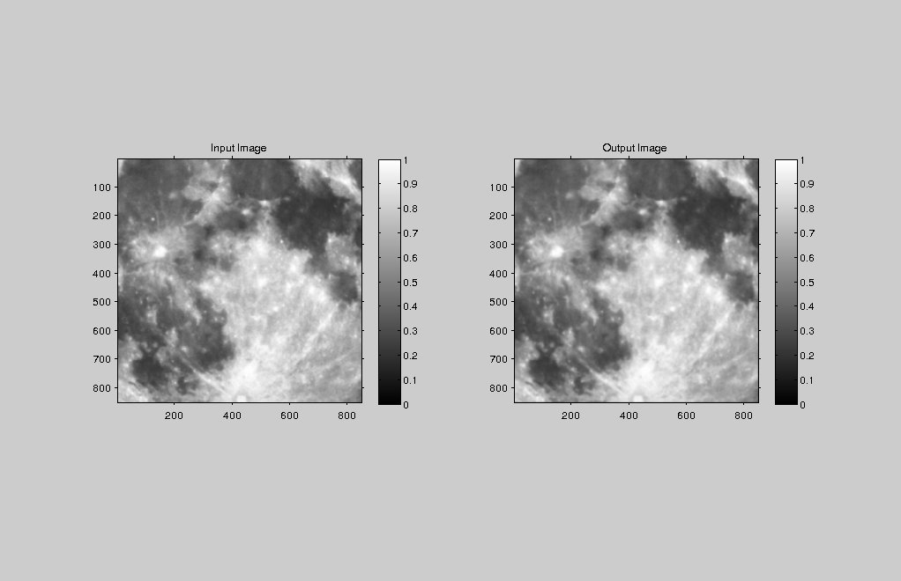

Contents
MyMainScript
tic;
Applying unsharpMask on lionCrop
img = load('../data/lionCrop.mat');
im=img.imageOrig;
out=myUnsharpMasking(im,5,1.875,1.9);
iptsetpref('ImshowAxesVisible','on');
figure('units','normalized','outerposition',[0 0 1 1])
subplot(1,2,1);
imshow(im), colorbar;
title('Input Image')
subplot(1,2,2);
imshow(out), colorbar;
name = strcat(['../images/output' 'lionCrop']);
file_name = strcat([name '.png'])
imwrite(out,file_name);
title('Output Image');
file_name =
../images/outputlionCrop.png

Applying unsharpMask on superMoonCrop
img = load('../data/superMoonCrop.mat');
im=img.imageOrig;
out=myUnsharpMasking(im,15,1.275,-1);
iptsetpref('ImshowAxesVisible','on');
figure('units','normalized','outerposition',[0 0 1 1])
subplot(1,2,1);
imshow(im), colorbar;
title('Input Image')
subplot(1,2,2);
imshow(out), colorbar;
name = strcat(['../images/output' 'superMoonCrop']);
file_name = strcat([name '.png'])
imwrite(out,file_name);
title('Output Image');
toc;
file_name =
../images/outputsuperMoonCrop.png
Elapsed time is 1.707150 seconds.
